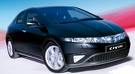
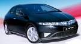
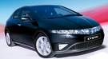

El Civic tiene un equipamiento de serie completo, todos tiene control de estabilidad. El equipamiento opcional que se monta en fábrica es muy reducido, sólo hay opción de navegador, asientos con calefacción y tapiceria de piel para la versión «Executive», no para las otras dos, sport y comfort. La pintura metalizada es una opción para todas las versiones. Hay otros elementos de equipamiento que se pueden montar en el concesionario, como distintos equipos de música, de ruedas y elementos diferenciadores de la carroceria

El Civic se caracteriza porque es más bien duro (y algo seco) de suspensión. Al menos con los neumáticos 225/45 R17 es un coche estable y con buen tacto. El motor Diesel es más satisfactorio por prestaciones y respuesta que el 1.8 de 140 CV y puede ser más silencioso a alta velocidad. En el Civic, las prestaciones y el consumo según datos de la marca son muy buenos, no hay ninguno que gaste menos y es de los mejores en prestaciones
Precio: 18.000 Euros

Pagina oficial de Honda: https://www.honda.es